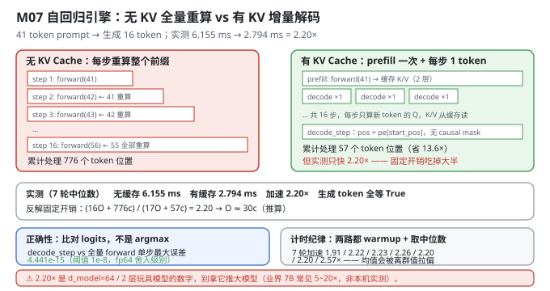
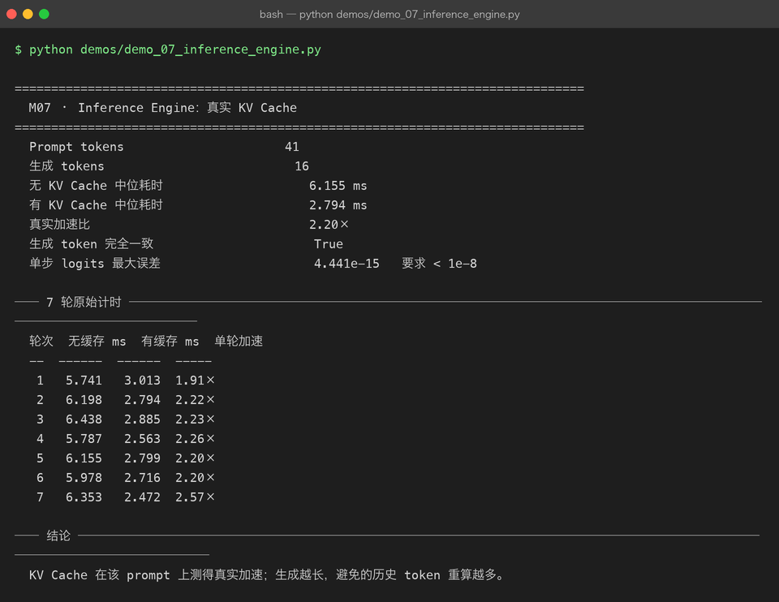

Milestone 07 — Inference Engine：KV Cache 到底快多少
前六层把"模型好不好"回答完了。后半段主线转向第二个问题：怎么让它跑得快？
自回归生成最蠢的做法是：每生成 1 个 token，就把整个前缀（prompt + 已生成部分）重新前向一遍。第 16 个 token 生成时，前 41 个 prompt token 已经被算了 16 遍。
KV Cache 的解法：把每层 attention 的 K / V 存下来，下一步只算新 token 的 Q，然后和缓存的 K/V 做注意力。
正确性上这是恒等变换（注意力对历史部分的计算不依赖未来 token），但性能上必须实测 —— 尤其在 d_model=64、只有 2 层的玩具模型上，省下的矩阵乘法可能还抵不过缓存管理的开销。
纯 numpy 手写：CausalLMWithKVCache 直接读 P06 模型的参数，用 numpy 重写完整前向与增量前向（src/ie/engine.py）。不走 autograd —— 推理不需要建图。
1. Why：为什么必须实测，而不是相信"理论上快"
教科书会说 KV Cache 把复杂度从 O(T²) 降到 O(T)。这个说法只在"计算是唯一成本"时成立。
真实成本 = 每步的固定开销 + 随序列长度增长的计算：
无 KV：16 步 × 完整前向（长度 41 → 56）
有 KV：1 次 prefill（41） + 16 步 × 单 token 解码固定开销包括：Python 函数调用、numpy 数组分配、每层 4 次 matmul 之外的 transpose / reshape / split / merge、LayerNorm、FFN、以及每步把新 K/V concatenate 进缓存的 O(T) 拷贝。
当 d_model=64、n_layers=2 时，矩阵小到固定开销占主导 —— 这时候"少算了多少 token"和"快了多少"之间的比例会被严重稀释。所以本章的数字必须自己测，不能照搬业界"KV Cache 加速 10×"的说法。
2. Design：两阶段 + 一个一致性对拍
class CausalLMWithKVCache:
prefill(ids) -> (last_logits, KVCacheState) # 一次性算完 prompt
decode_step(token, state) -> (last_logits, new_state) # 只算 1 个新 token
generate_ids(...) # use_kv_cache=True/False 可切换
benchmark(...) # 两路径对拍计时
cache_consistency_error(prompt_ids) # 增量 vs 全量 logits 误差四个关键点：
- 两阶段分离：
prefill处理整个 prompt 并产出缓存；decode_step只吃 1 个 token。两者的代码路径不同（prefill 需要 causal mask，decode 不需要 —— 单 token 的 Q 天然能看到全部历史），但产出必须一致。 - 位置编码靠
start_pos（src/ie/engine.py:101）：self.model.pos_enc.pe[start_pos : start_pos + 1]。增量解码时位置索引必须接着缓存长度走，否则位置编码全错 —— 这是 KV Cache 最容易写错的地方之一，而且写错了不会报错，只会让生成质量变差。 decode_step里没有 causal mask：单 token 的 query 对k做注意力时，历史全部可见，天然满足因果性。- 一致性对拍
cache_consistency_error（src/ie/engine.py:198）：对比decode_step产出的 logits 与"把prompt + [token]整体前向"的 logits。这比"生成的 token 序列相同"强得多 —— 后者完全可能只是argmax恰好一致。

3. Real-run evidence（来自 demos/out/demo_07_inference_engine_terminal.txt）
真实环境：Python 3.13.12 | numpy 2.5.3。模型 d_model=64 / n_heads=4 / head_dim=16 / n_layers=2 / max_len=256。prompt 41 token，生成 16 token，7 轮计时取中位数。
Prompt tokens 41
生成 tokens 16
无 KV Cache 中位耗时 6.155 ms
有 KV Cache 中位耗时 2.794 ms
真实加速比 2.20×
生成 token 完全一致 True
单步 logits 最大误差 4.441e-15 要求 < 1e-87 轮原始计时（实测全量）：
轮次 无缓存 ms 有缓存 ms 单轮加速
-- ------ ------ -----
1 5.741 3.013 1.91×
2 6.198 2.794 2.22×
3 6.438 2.885 2.23×
4 5.787 2.563 2.26×
5 6.155 2.799 2.20×
6 5.978 2.716 2.20×
7 6.353 2.472 2.57×四个读数：
- 2.20× 是真实测到的加速，中位数 6.155 ms → 2.794 ms。两路生成出的 16 个 token id 完全一致。
- 单步 logits 最大误差 4.441e-15，比要求的
1e-8小 7 个数量级。这是 fp64 的舍入级别 —— 说明增量解码与全量重算在数学上严格等价，KV Cache 实现正确，不是"碰巧生成了同样的 token"。 - 单轮加速在 1.91× ~ 2.57× 之间抖动（第 7 轮 2.57× 明显偏高）。这就是为什么要取中位数而不是均值或最小值。
- 有缓存一侧的绝对耗时只有 2.794 ms / 16 token ≈ 0.175 ms/token —— 这个数在 M09 会被直接拿去当离散事件仿真的
step_ms基准。

4. 踩坑 / 反直觉发现
4.1 ⚠ 小模型上 KV Cache 只有 2.20× —— 别拿这个数去推大模型
这是本章最重要的负结果，也是为什么"实测"比"理论上 O(T²)→O(T)"更可信的理由。
先算理论上省了多少：无 KV 时 16 步分别前向了长度 41…56 的序列，累计处理了
Σ(41…56) = 16×41 + (0+1+…+15) = 656 + 120 = 776 个 token 位置有 KV 时只处理了 41（prefill） + 16（decode） = 57 个。处理的 token 位置少了 776/57 = 13.6 倍，但实测只快 2.20 倍。
差额去哪了？把每次前向的固定开销记作 O、每 token 位置的计算记作 c，用实测的 2.20× 反解（推算，非直接实测）：
(16·O + 776·c) / (17·O + 57·c) = 2.20 → O ≈ 30·c即：每次前向的固定开销大约等于"处理 30 个 token 位"的计算量。 在 d_model=64、2 层的规模下，一次前向的固定开销（Python 调用 + numpy 分配 + split/merge/transpose + LayerNorm/FFN）几乎和算 30 个位置一样贵。
可迁移的经验：这 2.20× 是"玩具模型 + Python"的数字，不是大模型上的数字。 真实 7B 上矩阵大、计算占比高、且有 CUDA kernel 抹平固定开销，KV Cache 的收益通常高得多（业界常见 5~20× —— 这是业界经验值，不是本机实测）。反过来也成立：别用本项目的 2.20× 去论证"KV Cache 收益有限"。
4.2 "生成的 token 一样"不是正确性证明 —— 要看 logits
如果只检查 outputs[False] == outputs[True]（两个 16 token 的 id 列表相等），这个检查是很弱的：logits 可能差了一大截，但只要 argmax 的顺序没变，输出就完全相同。一个偏移量级的 bug（比如位置编码错位）在某些 prompt 上恰好不改变 argmax 排序，就会被这个检查放过。
所以 benchmark 里额外算了 cache_consistency_error：直接对比两个路径的 logits 向量：
cached, _ = self.decode_step(np.array([token]), state)
full = self.forward(np.asarray([prompt_ids + [token]]))[0, -1]
return float(np.max(np.abs(cached[0] - full)))实测 4.441e-15（fp64 舍入级别，阈值 1e-8）。这个数证明了三件事同时正确：位置编码的 start_pos、K/V 的拼接顺序、以及 decode 路径省略 causal mask 的合法性。
可迁移的经验：验证等价性要比对连续量（logits），不要比对离散量（argmax）。 离散量会在真正的 bug 上静默通过。
4.3 必须先 warmup，否则第一轮慢到不可信
benchmark 在正式计时前先跑了两轮 max_new_tokens=2：
for cached in (False, True):
self.generate_ids(prompt_ids, 2, use_kv_cache=cached, stop_id=None)原因很实际：首次调用会触发 numpy 的内存分配、CPU 缓存冷启动、可能的频率爬升。不 warmup 的话第一轮通常慢 20~50%，而如果两路的 warmup 程度不同（比如只 warmup 了一路），加速比会直接失真。
两路都要 warmup —— 只 warmup 有缓存那路，会让加速比虚高。
4.4 取中位数，不取均值
7 轮的加速比是 1.91 / 2.22 / 2.23 / 2.26 / 2.20 / 2.20 / 2.57。第 7 轮的 2.57× 明显是个离群值（大概率是 OS 调度或 GC 抖动）。
- 均值会被 1.91 和 2.57 两个方向拉扯，得到一个"没人跑到过"的数；
- 中位数（2.20×）是第 5 轮那个真实出现过的轮次，且它和众数一致（2.20 出现 2 次）。
本项目在 M09 的 step_ms（101 次实测）也用中位数 —— 同一个决定。
4.5 concatenate 每步都把整个 KV 拷一遍 —— 这是实现债，不是设计
k = np.concatenate([state.keys[index], current_k], axis=2) # src/ie/engine.py:109每生成一个 token，就把整个历史 K/V 复制一遍。所以增量解码并不是真的 O(1)，而是 O(T) 的拷贝 —— 只是它省掉了 O(T) 的矩阵计算（后者更贵）。
真实引擎（vLLM / TensorRT-LLM）的做法是预分配一块连续 buffer，按 length 追加写入，避免每步拷贝。本项目用 concatenate 是因为：
- numpy 没有"可增长的数组"这种原生结构；
- 玩具规模下拷贝的绝对成本很低（整个 KV 只有
2 层 × 41 token × 64 维的量级）； - 代码更短、更不容易写错 —— 而本章的首要目标是证明正确性。
诚实地标注：这让 2.20× 是一个偏保守的下界。预分配 buffer 能再往上抬一点，但幅度有限（真正的大头是 4.1 里的固定开销）。
4.6 max_len 边界必须在 decode_step 里检查
if state.length >= self.max_len:
raise ValueError("KV Cache 已达到模型最大上下文长度")同理 generate_ids 开头也检查 len(prompt_ids) + max_new_tokens > self.max_len。边界检查要放在"会静默产生错误结果"的地方，而不只是"会崩溃"的地方。
5. Conclusion
- KV Cache = prefill（一次算完 prompt）+ decode_step（每次 1 token）；位置编码靠
start_pos接续。 - 实测（41 token prompt → 生成 16）：无 KV 6.155 ms、有 KV 2.794 ms，真实加速 2.20×，生成的 16 个 token 完全一致。
- 单步 logits 最大误差 4.441e-15（阈值 1e-8）—— fp64 舍入级别，证明实现严格等价；比对 logits 而不是 argmax 才能抓到真正的 bug。
- ⚠ 小模型上只有 2.20×：理论省了 13.6 倍 token 重算，反解出"每次前向固定开销 ≈ 30 个 token 位的计算量"（推算）。别拿 2.20× 推大模型（业界 7B 常见 5~20×，非本机实测），也别用它论证 KV Cache 收益有限。
- 两路都要 warmup（各跑 2 token），否则加速比失真；取中位数不取均值（7 轮抖动 1.91×~2.57×）。
concatenate每步拷贝整个 KV 是实现债（真实引擎用预分配 buffer 追加），因此 2.20× 是偏保守的下界。max_len必须在 decode 时检查 —— 越界会让pos_enc切片为空，静默产生垃圾输出。- 手写实现的意义：因为增量解码和全量前向都是自己写的 numpy，我才能把两者的 logits 逐元素对比并拿到 4.441e-15 —— 用
transformers的use_cache=True只能选择"信或不信"。
6. Code map
| 文件 | 职责 |
|---|---|
src/ie/engine.py | KVCacheState（keys/values/length）/ CausalLMWithKVCache._embed（start_pos 位置编码）/ forward（全量，带 causal mask）/ prefill / decode_step（增量，无 mask）/ generate_ids（use_kv_cache 可切换）/ benchmark（两路 warmup + 7 轮计时 + 中位数）/ cache_consistency_error（增量 vs 全量 logits 误差） |
src/ie/engine.py:101 | self.model.pos_enc.pe[start_pos : start_pos + ids.shape[-1]] —— 增量解码的位置编码接续点 |
src/ie/engine.py:109 | np.concatenate([state.keys[index], current_k], axis=2) —— 每步 O(T) 拷贝（实现债） |
src/ie/engine.py:198 | cache_consistency_error：比对 logits 而非 argmax |
demos/demo_07_inference_engine.py | 3 节：benchmark / 7 轮原始计时 / 结论 |
demos/out/demo_07_inference_engine_terminal.txt | 本章所有数字的来源 |
assets/inference-engine.svg | 本章自回归引擎有无 KV Cache 对比图 |
7. Version line
v0.6 → v0.7，M07 推理引擎与真实 KV Cache 落地。实测（41 token prompt → 生成 16，7 轮取中位数）：无 KV 6.155 ms、有 KV 2.794 ms，真实加速 2.20×；生成 token 完全一致 True；单步 logits 最大误差 4.441e-15（阈值 1e-8，fp64 舍入级别）；单轮加速分布在 1.91×~2.57×。并诚实记录「⚠ 理论上省了 13.6 倍 token 重算却只快 2.20×，反解出每次前向固定开销 ≈ 30 个 token 位计算量（推算），别拿 2.20× 推大模型」「比对 logits 而非 argmax 才能证明等价」「两路都需 warmup、取中位数不取均值」「concatenate 每步拷贝使 2.20× 偏保守（下界）」。纯 numpy、无 torch。配图 1 张手写 SVG + 1 张真实终端截图。